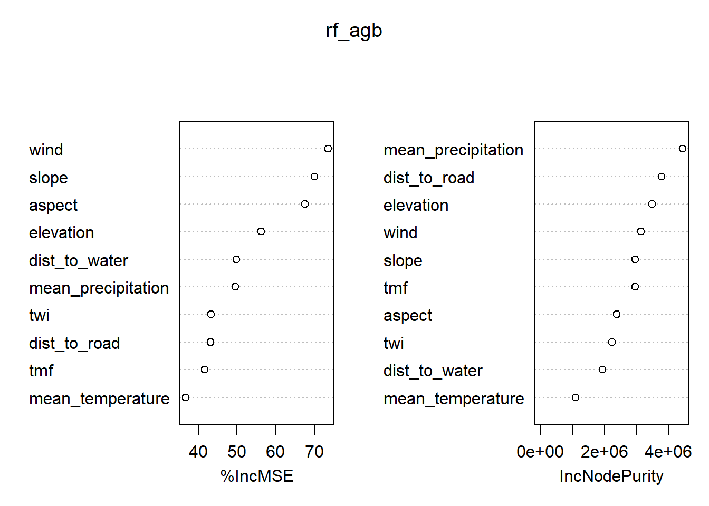
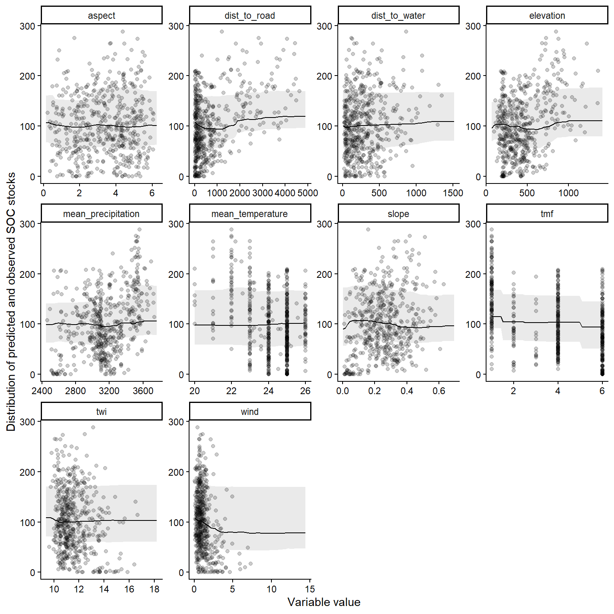

Code
library(terra)
library(sf)
library(randomForest)
library(tidyverse)library(terra)
library(sf)
library(randomForest)
library(tidyverse)Get AGB values by year in undisturbed forests.
area <- list.files("data/umrbpl/", full.names = TRUE, pattern = "shp$") |>
read_sf() |>
st_transform(crs = "EPSG:4326")
agb_maps <- list.files(
"data/biomass/", "umrbpl_ESACCI-BIOMASS-L4-AGB-MERGED",
full.names = TRUE
) |>
rast() |>
mask(area)
years <- list.files("data/biomass/", "umrbpl_ESACCI-BIOMASS-L4-AGB-MERGED") |>
strsplit("-") |>
lapply(function(x) as.numeric(x[7])) |>
unlist()
tmf_maps <- list.files("data/tmf/", "UMRBPL", full.names = TRUE) |>
grep(pattern = paste(years, collapse = "|"), value = TRUE) |>
rast() |>
# resample to agb resolution
resample(agb_maps, method = "modal") |>
mask(area)
names(agb_maps) <- years
names(tmf_maps) <- gsub("Dec", "", names(tmf_maps))
coords <- data.frame(crds(agb_maps)[sample(nrow(crds(agb_maps)), 1e4), ])
data <- lapply(list(agb_maps, tmf_maps), function(r) {
terra::extract(r, coords, ID = FALSE, xy = TRUE) |>
pivot_longer(cols = as.character(years), names_to = "year") |>
mutate(year = as.numeric(year))
}) |>
set_names(c("agb", "tmf")) |>
bind_rows(.id = "data") |>
pivot_wider(
id_cols = c("x", "y", "year"),
names_from = "data", values_from = "value"
)Explanatory variables
set.seed(123)
data <- c(
"data/srtm/topo_variables.tif",
"data/chelsa/climate_variables.tif",
"data/wind/UMRBPL_wind-speed_10m.tif",
"data/osm/dist_to_road.tif",
"data/osm/dist_to_water.tif"
) |>
lapply(function(r) {
r |>
rast() |>
mask(area) |>
resample(agb_maps, method = "mean")
}) |>
rast() |>
terra::extract(data[, c("x", "y")], ID = FALSE) |>
rename(dist_to_road = elevation.1) |>
rename(dist_to_water = elevation.2) |>
bind_cols(data)rf_data <- data |>
filter(year == 2022) |>
rename(wind = `PHL_wind-speed_10m`) |>
select(
agb, elevation, slope, aspect, twi, mean_temperature,
mean_precipitation, wind, tmf, dist_to_road, dist_to_water
) |>
drop_na()
type <- c("cal", "eval")[1 + rbinom(nrow(rf_data), 1, 0.2)]rf_agb <- randomForest(agb ~ .,
data = rf_data[type == "cal", ],
importance = TRUE
)
save(rf_agb, file = "models/rf_agb.rda")load("models/rf_agb.rda")
predictions <- predict(rf_agb, newdata = rf_data[type == "eval", ])
errors <- rf_data$agb[type == "eval"] - predictions
rmse <- sqrt(mean(errors^2))
print(paste("RMSE:", round(rmse), "Mg/ha"))[1] "RMSE: 38 Mg/ha"r_squared_oob <- rf_agb$rsq[length(rf_agb$rsq)] * 100
print(paste(
"Out-of-Bag R-squared (% Var Explained):",
round(r_squared_oob), "%"
))[1] "Out-of-Bag R-squared (% Var Explained): 51 %"# Calculate R-squared on the test set
ss_total <- sum((rf_data$agb[type == "eval"] -
mean(rf_data$agb[type == "eval"]))^2)
ss_residual <- sum((rf_data$agb[type == "eval"] - predictions)^2)
r_squared_test <- 1 - (ss_residual / ss_total)
print(paste("Test Set R-squared:", round(r_squared_test * 100), "%"))[1] "Test Set R-squared: 61 %"varImpPlot(rf_agb)
The partial dependence plots are represented below.
data_all <- data |>
filter(year == 2022) |>
rename(wind = `PHL_wind-speed_10m`) |>
select(
agb, elevation, slope, aspect, twi, mean_temperature,
mean_precipitation, wind, tmf, dist_to_road, dist_to_water
) |> drop_na()
preds <- lapply(colnames(data_all)[-1], function(x) {
data.frame(
value = seq(
min(data_all[[x]]),
max(data_all[[x]]),
length.out = 50
)
)
})
names(preds) <- colnames(data_all)[-1]
preds <- bind_rows(preds, .id = "var")
partial <- function(model, data, variable, val, quants = c(0.1, 0.5, 0.9)) {
new_data <- data
new_data[, variable] <- val
predict(model, new_data) |>
quantile(probs = quants)
}
preds |>
group_by(var, value) |>
summarise(quant = c("Q10", "Q50", "Q90"),
pred = partial(rf_agb, select(data_all, -agb), var, value)) |>
write.csv("models/rf_agb_partial.csv", row.names = FALSE)data_all <- data[sample(5000),] |>
filter(year == 2022) |>
rename(wind = `PHL_wind-speed_10m`) |>
select(
agb, elevation, slope, aspect, twi, mean_temperature,
mean_precipitation, wind, tmf, dist_to_road, dist_to_water
) |> drop_na() |>
pivot_longer(!agb, names_to="var")
read.csv("models/rf_agb_partial.csv") |>
pivot_wider(names_from = "quant", values_from = "pred") |>
ggplot(aes(value, Q50)) +
geom_ribbon(aes(ymin = Q10, ymax = Q90), alpha = 0.1) +
geom_point(data = data_all, aes(y = agb), alpha = 0.2) +
geom_line() +
facet_wrap(~var, scales = "free") +
theme_classic() +
theme(legend.position = "none") +
labs(x = "Variable value",
y = "Distribution of predicted and observed SOC stocks")